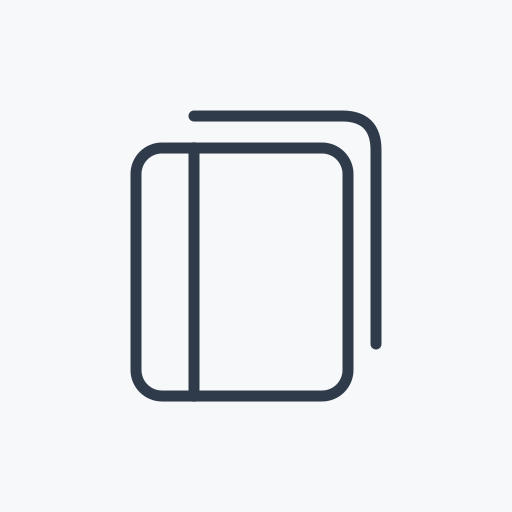
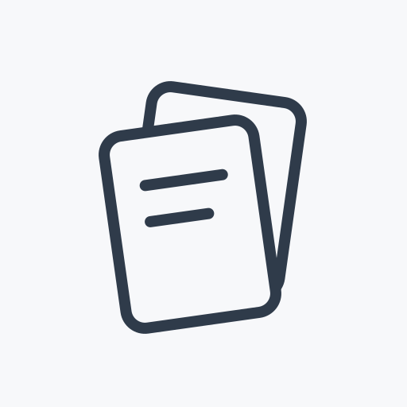
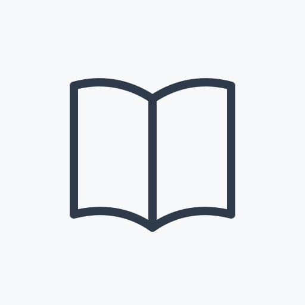

Ａ · 合页成册
已选方案封面、书脊与露出的内页构成一个安静的资料册。强调「整理成册」，适合长期保管重要资料的产品定位。
沿用归匣、织境、藏真的浅灰与石墨蓝灰、圆角几何线条。已选定Ａ「合页成册」，其余两款保留作设计对照；正式接入源文件位于 assets/branding/anch-app-icon.svg。

封面、书脊与露出的内页构成一个安静的资料册。强调「整理成册」，适合长期保管重要资料的产品定位。

错落的资料页表达收集和归整，轮廓更活泼；与归匣的卡片语言接近，资料册的识别相对弱一些。

用展开的双页表现随时查阅，左右结构清楚；读书工具的联想更强，辨识度主要来自简洁的整体轮廓。